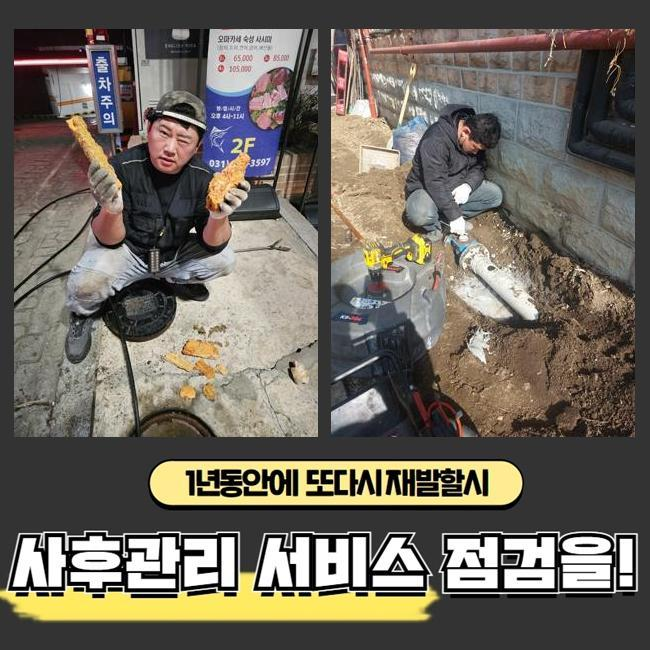
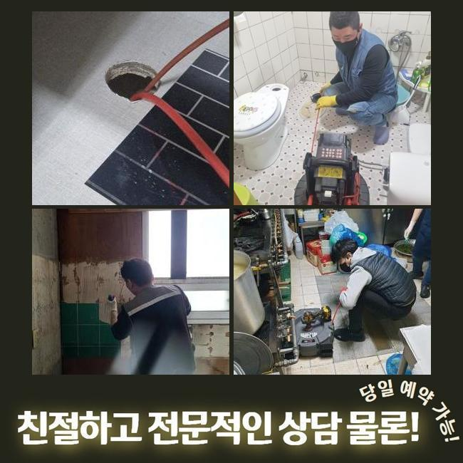
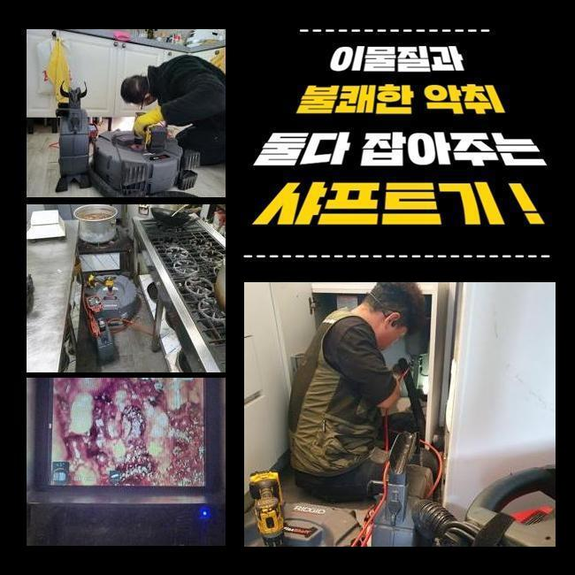
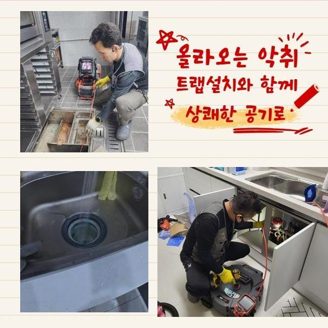
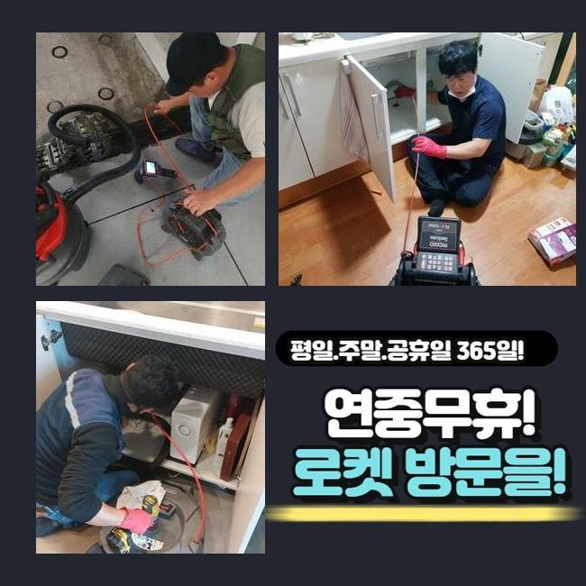
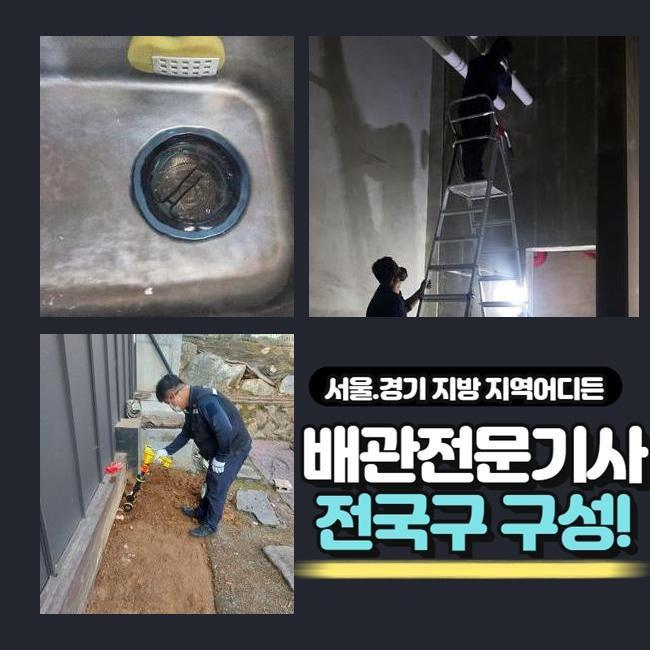
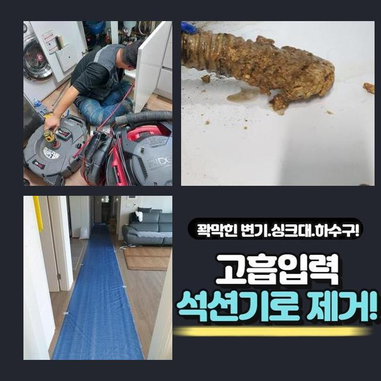

🏠 수원 파장동세탁실뚫음 조원동 오수맨홀청소 통수전문
수원 원동 하수구막힘 전문 시공 후기

📋 작업 개요
- 위치: 수원 원동, 원동, 수원
- 서비스 유형: 하수구막힘, 배관막힘, 맨홀막힘, 역류해결, 뚫는업체, 배관청소, 고압세척, 설비공사, 악취차단
- 작업 일시: 2025. 3. 22. 21:53
- 업체명: 하수구수사대 (010-5615-2118)
🔍 문제 상황
수원 파장동세탁실뚫음 조원동 오수맨홀청소 통수전문
아늑해야할 가정안에서 간헐적으로 생겨나는 불편이 있어요
그것중 한가지로 하수관막힘을 설명드리고자 해요
하수관이 차단되면 고약한 냄새가 올라올뿐만 아니라 평상적인 생활의 괴로움을 가중하게 만들죠
배관막힘으로 욕실사용을 하지못하고 역류마저 나타난다면 더더욱 문제는 심화될텐데요
본 글에서는 가정집의 배관막힘이 일어나 여러가지 기기들을 동원하여 해결한 내용을 설명드리려 해요
고객께선 집안내의 세탁기 배수관에서 배관고장이 생겼다면서 저희팀에 문의를 넣으셨는데요
시공차량에 플렉스샤프트와 석션기기와 같은 것들을 싣고 현장쪽으로 이동했습니다
내부로 진입하니 고약한 냄새가 올라왔고 찌꺼기들이 역류로 흩어진 모습또한 확인할수 있었죠
세탁버튼을 눌러서 배수하려고 시도했으나 도리어 넘쳐버리는 형국이 나타났다 설명하셨죠
간단하게 물만 토출되는게 아닌 다양한 이물들까지 올라오는 상태였어요
일부의 시설에선 세탁실과 주방시설의 배수관이 교차되는 상황도 볼수 있답니다
그것에 관계된 부분도 진단해 보았어요
사태를 세밀하게 간파하려는 목적으로 의뢰자께 화장실이나 타 배관이 막혔거나 역류증세가 생긴적은 없었는지에 대해 여쭸는데요

🔎 원인 분석
💡 전문가 진단: 정밀 진단 장비를 사용하여 슬러지의 고착 여부를 판명하고 타격/세척 작업을 실시했습니다.
그저께 배수문제로 인터넷에서 구매한 액상뚫어뻥과 백식초를 투입해보았다고 하셨는데요
그것에 기반하여 생각해보았더니 주방설비 부근의 하수도에 고장의 사유가 있을거라 추정했답니다
저희측이 내방드린 현장의 역류를 해소하기 위하여 동기를 파악하기로 합니다
내시경cctv를 투입시켜 정체가 생긴 배수관을 검사해보기로 결정했죠
배수문이 막혀 내부에 내시경을 넣지 못할땐 방수청소기로 하수관의 이물들을 빨아들입니다
해당되는 공정을 토대로 작업시간을 줄여나갈 수 있죠
세척중에 여러 찌꺼기들과 잔재들이 흡입되었는데요
하지만 해당 업무만으로는 본원적인 막힘의 까닭이 어떠한 것인지에 대해 간파해내지는 못하였죠
일차로 진행한 셕션기기로 소제할수 없는것들이 상당하였기에 즉각 배관카메라를 넣어서 역류가 발발한 배수관을 관찰하기로 했어요
찌꺼기들을 신밀하게 파악해보니 해변에 존재하는 모래 성분이었답니다
빨래를 하시다가 방출된 사태일 공산이 컸어요
의뢰자께 여행일정이 있으셨는지 여쭤보았더니 동해안 쪽의 해변가에 놀러가셨다고 말하셨어요
우선적으로 큼지막한 이물질을 제거하였고 한층 공격적으로 세척작업을 실행합니다
그러면서 하단부위까지 처치가능한 테크닉과 장비를 사용하기로 했습니다

🔧 작업 과정
배관내시경을 쓰는건 배관전체의 문제점을 명확히 간파하고 정체를 해소하려는 목적인데요
흡입기계로 소제를 이행하고 가느스름한 호스줄에 붙어있는 내시경cctv를 이용하여 하수구 하단부를 관찰하게 되었죠
깊은 지점까지 살펴보았고 본질적인 막힘원인을 발견해낼수 있던거죠
이렇듯 하수구 정체는 여러 변수에 의하여 일어나는 양상을 보이고 처리방책이 단조로운것도 아니죠
그렇기때문에 전문적인 기기들을 토대로 수리를 진행하여야 순조롭게 끝마칠수 있는거죠
혹시라도 엉성하게 사태를 정리하려든다면 더욱더 막힘이 증대되기 쉽다는걸 꼭 기억해주세요
하수관 안쪽부분을 배관카메라로 관찰해 보았어요
하수관의 총길이는 예상한것 보다 큰 수치를 나타내고 생김새도 불규칙적이라 직관적으로 인지하기에는 어려움이 있죠
이러한 상황에서는 가느다란 내시경카메라가 확실한 기능을 할수가 있답니다
배관내시경을 이용해서 관로안을 면밀하게 확인하였더니 다양한 노폐물들과 흙성분들이 엉겨붙은 상태였습니다
해당 물질은 배수되기 어렵고 배관면에 달라붙어 경화되기 쉽답니다
자그마한 성분들은 배수관을 통해 쉬이 오수탱크로 이동하겠지만 일시에 그 성분들을 투입시켜버린다면 해당 현장처럼 정체가 일어날수 있죠
그것에 더하여 막힘이 지속된다면 관로에 이물막이 생겨나기도 합니다
이물의 크기와 양을 기준으로 쓰는 기기가 달라집니다
하나의 예로 수건등의 커다란 부피의 물체가 막혀있다면 고리를 이용하여 들어낸뒤 석션기기로 관로 안을 청소해야 됩니다
만일에 이런 방식을 쓰지않고 플렉스샤프트작업을 곧장 하면 배수관 속이 한층 안좋아질수 있답니다
찌꺼기들이 뭉텅이처럼 다량 분포되어 있을땐 그것들을 작게 부수는 스케일링을 속행하는데요
여긴 작은 모래알과 엉켜있었기 때문에 플렉스샤프트를 이용해서 분쇄시키고 뚫어내기로 결정한것이죠
이번에 내방드린 곳에서는 관로안을 채웠던 노폐물들을 없앤다음에 내시경기기로 또다시 진단을 실시했어요
그러고나서 남아있는건 분쇄장비로 정결히 정비하고 곧바로 물을 내려 보았는데요
지체없이 개운하게 소멸되는걸 인지할수 있었네요
공사현장에서 토출된 지저분한 것들을 전체적으로 소거하고 폐기처리하는걸로 절차를 마감하였어요


✅ 작업 완료
해당되는 물막힘을 사전에 방지하려면 정기적으로 하수구 진단해보았고 세척을 해야합니다
주방설비쪽의 하수관에선 음식물이 중앙에 정체하여 역류를 일으킬때가 많아요
그럴땐 지체하지말고 즉각적으로 전문업체를 찾으시는게 합리적인 선택입니다
자체적으로 처리할수있는 방안은 본질적인 해결에 다가서기 어렵고 더더욱 사태가 심화되는 정황도 빈번하기 때문이죠
기술자의 클리닝과정은 간단히 일상생활을 정상화시켜 주는것만이 아닌 위생상의 안전함을 담보하는데도 중요하답니다
그리고 해당 사태가 지속해서 방치되버리면 주변 이웃들에게도 악영향을 가할수 있단걸 기억하셔야 해요




⚠️ 하수구 배관 막힘 예방 및 관리 가이드
- ✅ 머리카락, 비닐, 물티슈 등 물에 분해되지 않는 이물질은 하수구 유입을 절대 금지해 주세요.
- ✅ 하수구 거름망을 씌우고 모여진 이물질은 주기적으로 쓰레기통에 바로 비워주셔야 합니다.
- ✅ 배관 노후가 심할 경우 이물질이 더 쉽게 걸리므로 주기적인 배관 세척(고압세척 등)을 권장합니다.
- ✅ 작업 후 1년 이내 재발 시 하수구수사대에서 무상 A/S 보증 서비스를 제공합니다.
💡 핵심 정리
- 확실한 장비 작업(내시경 점검 및 샤프트 스케일링)으로 원인을 뿌리 뽑습니다.
- 작업 후 1년 이내에 동일한 부위 재발 시 100% 무상 A/S 서비스를 보장합니다.
- 서울 · 경기 · 인천 전 지역에 24시간 언제든 긴급 출동할 수 있도록 항시 대기 중입니다.
❓ 자주 묻는 질문 (FAQ)
🚨 수원 원동 하수구막힘 문제로 고민이신가요?
정확한 원인 진단과 확실한 시공으로 재발 없는 해결을 약속드립니다.
24시간 긴급 출동 | 서울 · 경기 · 인천 전지역 | 1년 내 재발 시 무상 A/S